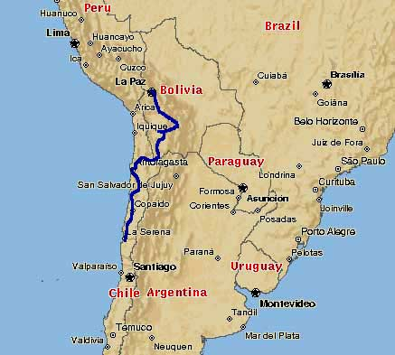
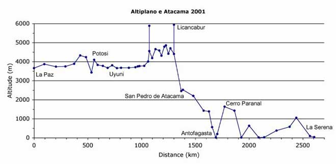

Altiplano e Atacama
August-October 2001

**********************
Detailed itinery
Bolivia
La Paz - (by bus to Chacaltaya 5400 m and Lago Titicaca / Isla del Sol) - La Paz - Potosi - Uyuni - Salar de Uyuni - Laguna Colorada - Laguna Verde
1350 km
then aross the border to Chile
San Pedro de Atacama - Antofagasta - Chanaral - Copiapo - La Serena - (by bus to Santiago)
1250 km
**********************
Altitude profile of the route

**********************
Details about SW-Bolivia (Uyuni-San Pedro de Atacama)
Some refer to this stretch of the route as the toughest in South America. I basically don't care about these things. I can give you detailed information about this immensely beautiful place. Almost all tourists pass it by jeep (even cyclists) and they all miss out most of the adventure. The journey by bicycle should not be taken lightly. So come prepared.
Note: the waypoints were recorded by a friend of mine, they seem all correct but do not exactly reflect my route. Between Uyuni and the first series of Lagunas, I travelled on a different route. Email for details.
Download GPS-waypoints (.txt format). In alphabetical order!

**********************